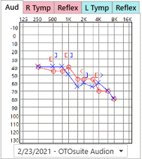

Test Data
Audiograms and Tympanograms
- Audiograms and tympanograms are displayed in the history entry when the information is tested in NOAH. This view will be displayed by default if the History Type is an Audiology specialty.

- Click on the Audiogram tab to view audiograms for the patient and select the date of the audiogram that you want to view from the drop down list below the audiogram displayed.
- Click on the Right Tymp or Left Tymp tabs to view tympanograms for the patient and select the date of the tympanogram that you want to view from the drop down list below the tympanogram displayed. If the tympanogram was manually drawn using the "Draw Tymp" module, it will be displayed with the word "Manual" after the date.

- Click on the audiogram or tympanogram graph to see an expanded view with details.


Reflex Data Graphs
- Reflex Data graphs are displayed in the history entry when the information is entered in the NOAH impedance tab.

- The number in the box is the maximum value of the graph in ml.
- The same graph appears on the modules for reflex analysis.
Speech Audiometry
- Click on the Speech button to open the Speech Audiometry window. If Speech Audiometry has been tested the results will automatically populate.

- Speech Audiometry results can also be entered manually.
- Testing data for Speech Audiometry is included on the Diagnostic Report.
Word Recognition
- Click on the WR button to open the Word Recognition window. If Word Recognition has been tested the results will automatically populate.

- Word Recognition results can also be entered manually.
- Testing data for Word Recognition is included on the Diagnostic Report.
Test Setup
- Audiometer setup information for multiple audiometers, test reliability, test method, and test transducer can be entered and saved in the Setup - History.
- Click on the Test Setup button to open the Audiogram Setup window and enter setup information.

- Information entered will be saved and applied to the selected Audiogram.
Report
- Click the Report button
 to select a diagnostic report which includes the audiogram and other testing data. Choose from the list of available reports that have been added through the report designer, or as custom reports. Custom reports can also be used with this feature - contact TIMS Support for details. The report designated as the default one in Practice Setup, will be at the top of the list. See Diagnostic Reports for more detail. See Diagnostic and SLP Reports for more information.
to select a diagnostic report which includes the audiogram and other testing data. Choose from the list of available reports that have been added through the report designer, or as custom reports. Custom reports can also be used with this feature - contact TIMS Support for details. The report designated as the default one in Practice Setup, will be at the top of the list. See Diagnostic Reports for more detail. See Diagnostic and SLP Reports for more information.

Chart Notes Report
- Click the Chart Notes button
 to see a summary of all history notes (including communication interactions) for the patient. If Noah 4.2 or above is installed, this summary will also include the patient's audiograms, test results, telehealth sessions, medical conditions, medications, and current hearing aids. The notes summary and/or audiograms can be printed from this screen. Click the down arrow next to Print to see the print options. Click on the audiogram to print an individual diagnostic report for the doctor or patient.
to see a summary of all history notes (including communication interactions) for the patient. If Noah 4.2 or above is installed, this summary will also include the patient's audiograms, test results, telehealth sessions, medical conditions, medications, and current hearing aids. The notes summary and/or audiograms can be printed from this screen. Click the down arrow next to Print to see the print options. Click on the audiogram to print an individual diagnostic report for the doctor or patient.


- Notes can be printed individually or all at once. Click on the audiogram to print an individual diagnostic report for the doctor or patient.
Test Results
Severity, Configuration and Type of Loss
- Record the testing results for Severity, Configuration and Type of Loss in the Right Ear and Left Ear test result fields.

- Test results for Severity, Configuration and Type of Loss are included on the Diagnostic Report.
- If Noah Data Mining criteria have been previously setup, clicking this button
 will update the Severity and Configuration results based on that criteria and the latest audiogram.
will update the Severity and Configuration results based on that criteria and the latest audiogram. - Click either the left or right button
 to copy test results from one side to the other.
to copy test results from one side to the other.
Customizable Fields
- Additional testing fields and drop down options can be added and existing fields can be edited in history setup.

- Test results for the customizable fields are included on the Diagnostic Report.
Chart Notes
- Click to open or close arrows to display or hide the Diagnosis and Recommendation fields. (see example)
- Notes can be typed into each of the fields or entered using voice recognition or scripted notes.
- Right click in any of the note fields and select Open Editor to edit Information entered using the Note Editor function. See Rich Text Editor for more information.
- Right click in any of the note fields and select Enable or Disable Spell Checker.

Scripted Notes
- Scripted Note templates can be created for the Diagnosis, Recommendation and Chart Notes fields.

- Scripted Notes can be customized by user and categorized to allow each user her or his own notes.
- Scripted Notes include date and user initials by default but can be excluded if needed.
- Amount of text allowed in a Scripted Note is unlimited.
- Scripted Notes can be setup in History Setup.